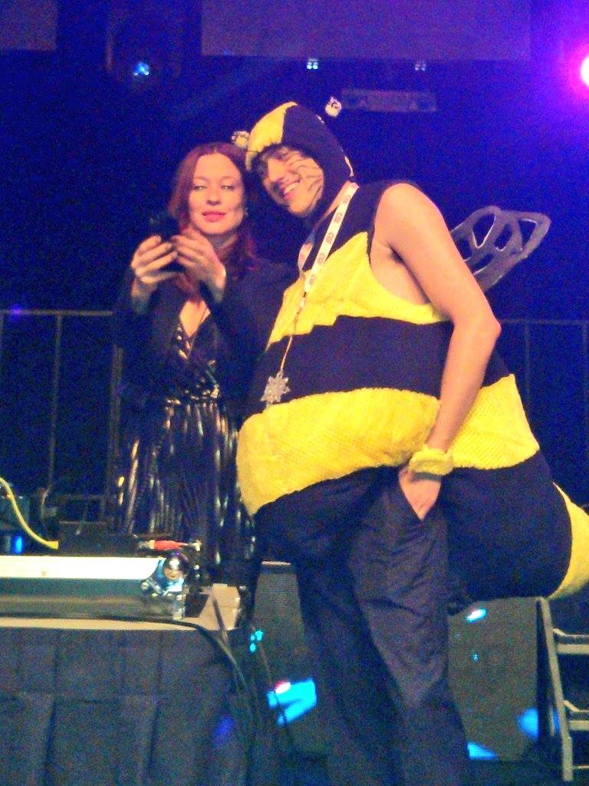

Formation JS Moderne #1
Par: Sylvain Cloutier
Qui suis-je?

Twitter: @Syl20TOS
Github: @fragmatyc
Blog: Java Code Geeks +
Web Code Geeks
Le GIJS?
Rassemblement de developpeurs partageant un intérêt ou une curiosité pour JS!
Et... pourquoi?
Promouvoir l'utilisation d'un langage en plein essor.
Soyons proactifs!
Et JavaScript?
JavaScript, c'est un langage:
- Bien établi (est. 1995)
- Multi-paradigme
- Script
- OO
- Fonctionnel
- Etc.
- Syntaxe connue (C/C++)
- Performant
- Interpreté et/ou compilé
- Extrêment populaire
Régie par ECMA (spécifications)
Assure la compatibilité inter-navigateur.
Moteurs d'exécution connus:
- Spidermonkey (Firefox)
- Chakra (MS Edge/IE)
- JavaScriptCore (Safari)
- V8 (Chrome, Node.JS, MongoDB)
Pourquoi moderne?
Connaissez-vous JS?
function onSayHiButtonClick() {
var message = "Hi!";
alert(message);
}
Qui pense que JS sert encore à ça?
(Démo!)
Et cette présentation?
100% JS - Reveal.js
Et mon EDI?
100% JS - Adobe Brackets
100%?!?! NON!?!
OUI!
Alors... explorons ce monde!
Objectif
Pourquoi un Tic Tac Toe?
- Notre journée est finie
- Simple
- Amusant!
Ce que vous allez apprendre...
Session 1 - Projet et TDD
- POO
- TDD
- Environnement de développement
- Structure du code
Session 2 - Intégration Angular.js et Bower
- MVC côté client?!
- Single Page Application
- Gestion des dépendences avec Bower
- Les services Angular
Session 3 - HTML5, Bootstrap et jQuery+UI
- Survol des nouveautés de HTML5
- Design avec Bootstrap
- Animations avec CSS et JS
Session 4 - Back-end Node.js
- Qu'est-ce que Node.js?
- TDD pour Node
- Communication Front/Back-end
- SOA? Microservice? MVC?
Session 5 - Multijoueur!
- Angular Route
- Sécurité (JWT/SSL)
- MongoDB
Session 6 - Le tout en temps réel
- Concepts de temps-réel
- Socket.IO
Session 7 - Grunt.js
- Compilation
- Minification
- Packaging
Session 8 - Padding!
- Finir les sessions précédentes
- Approfondir au besoin
- Sujets non-couverts? Suggestions?
GO!
Pas si vite!
Extreme Programming
Pairez-vous!
Exemple de moteur simple
var TicTacToeGame = function () {
// Retourne false si la partie est terminée
this.isGameInProgress = function () {};
// Retourne true si la grille est pleine
this.isBoardFull = function () {};
// Place un X ou un O sur la grille à la bonne cellule
this.playerMove = function (row, column) {}
// Obtient la valeur d'une cellule ("X", "O" ou undefined)
this.getCell = function (row, column) {};
// retourne true si un joueur a gagné!
this.hasSomeoneWin = function () {};
};Exemple de test QUnit
module("TicTacToeGame Test");
QUnit.test("TestThat...", function (assert) {
var game = new TicTacToeGame();
assert.ok(game);
});
Test Driven Development Cycle

Go!
git clone https://github.com/fragmatyc/GIJS.gitCommentaires? Suggestions?
Ouvrez un bug :)
Communauté JS chez CGI QC
- Wifi: vp-dir / decaf00008
- https://github.com/fragmatyc/GIJS
- https://gijs-qc.slack.com/